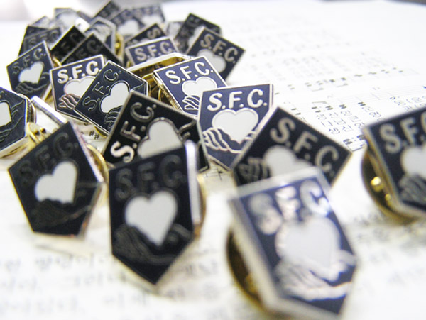

SFC
Badge(뱃지)

1955년 전국학생운동에서 채택되어 계속 사용되어 왔다. 심장은 피와 깊은 관계가 있다. 피는 생명이다. 그러므로 우리의 운동은 생명의 운동이다. 나의 가장 중요한 것, 나에게 가장 귀한 것을 주님께 드린다. 그것이 생명이라도. 우리 뺏지와 비슷한 모양을 한 미국의 칼빈 신학교의 뺏지의 주위에는 다음과 같은 말이 씌어져 있다. 뺏지의 손은 오른손이다. 오른손으로 우리의 심장과 사랑을 바친다. 오른손은 힘있는 손이다. 이것은 우리의 운동이 억지로 시켜서 하는 운동이 아니라, 자발적이며, 능동적이며, 생산적이며, 희망적인 꿈의 운동임을 보여 준다. 다이나믹한 동력을 가진 우리는 '회'가 아니라 '운동'이다. 우리가 이런 자세를 가질 때 주의 의로우신 오른팔이 우리와 함께 하신다.(사41:10)